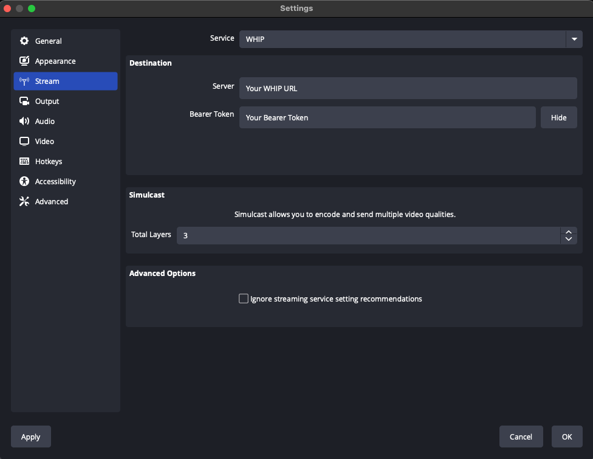

Are you tired of your screenshares looking like this?
Don't you think they should look like this instead?
You need WHIP.
OBS and FFmpeg now speak WebRTC, the protocol used for web conferencing. Now you get high quality video with greater control in your conference.

Help! My video conferencing provider doesn't support WHIP. What can I do?
Send them an angry email. Tell them you don't want their crappy proprietary client. You want open standards that let you bring the tools you prefer.
FAQ
What is WHIP?
Joining a WebRTC call used to require running custom code for every service. WHIP removed that requirement. WHIP is an open standard that defined how with a URL + Bearer Token a client can publish WebRTC.
Why is my screenshare blurry?
A lack of control. Your browser is picking a bitrate, codec or resolution that doesn't match what you need. You aren't able to to change these settings either.
How is OBS/FFmpeg different then browser screensharing?
These tools give you more control. You know what content you are streaming, so you can tune better. You know what hardware/network you have and what it is capable of.
What about OBS Virtual Camera?
OBS Virtual Camera still does encoding in the browser. You can pick the layout of your stream, but the browser may still do a bad encode.
Where can I use WHIP + OBS today?
Check out OBS WHIP setup guide for up to date info.
Why did you make this site, are you getting paid?
I made it because I am frustrated. I work on WHIP in OBS, and seeing people still suffering/complaining about video streaming frustrates me. I wish more people knew that things could be better.